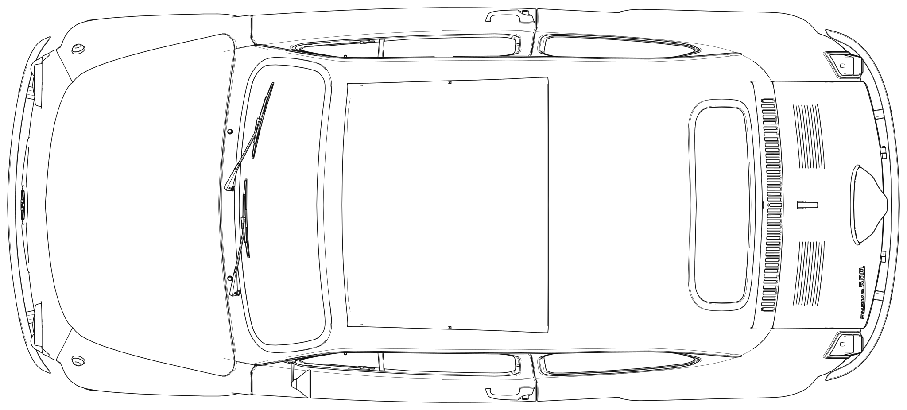
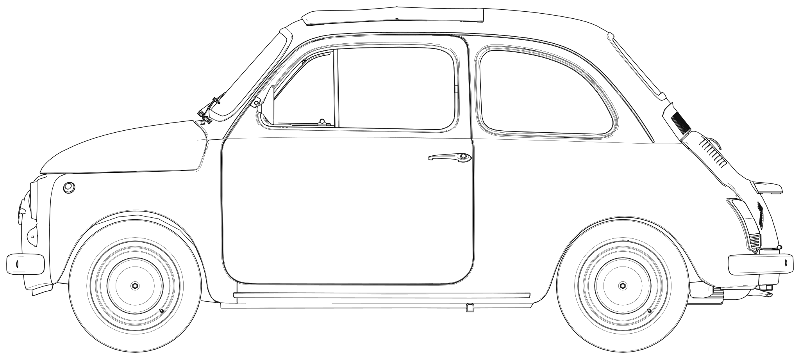

部品を選んで、図の上をクリックしてください。もう一度クリックすると置き直せます。 入力はこのブラウザに自動保存されます（閉じても消えません）。
ノーズが左。画像の上が車の右側です。前トランク 0〜1.02m ／ 室内 1.02〜2.05m ／ エンジンルーム 2.05〜2.97m。

車の左側面。ノーズが左・エンジンが右。地面が下端です。

この内容をそのまま返してください（wiring-layout.json に起こします）。
形は PowerPoint 版の読み取り（read_pptx.py）と同じです。